전자계산기조직응용기사 (2020-06-06 기출문제)
1과목: 전자계산기 프로그래밍
1. C언어에서 int a [ ] = {4, 5, 6, -9}; 라는 명령을 정적 배열로 초기화하는 것과 동이하게 수행하는 명령은?
- int a [4] = 4, 5, 6, -9;
- int a [4] = {4, 5, 6, -9};
- int a [4, 5, 6, -9];
- int a [ ] = 4, 5, 6, -9;
(정답률: 71%)

2. 매개변수 전달방식(parameter passing mechanism)에 있어 값 전달방식(call by value)에 대한 설명으로 옳은 것은?
- 형식매개변수의 어떠한 변화도 실매개변수에 아무런 영향을 미치지 않는다.
- 형식매개변수의 이름이 사용될 때마다 대응되는 실매개변수의 이름으로 대치된다.
- 값 전달방식(call by value)으로 실매개변수의 주소를 형식매개변수로 보낸다.
- 형식매개변수의 값을 실매개변수에 저장하고, 형식매개변수를 부프로그램의 전역변수로 사용한다.
(정답률: 43%)
3. 사용자가 작성한 프로그램 오류를 검토 및 수정할 수 있는 프로그램은?
- 링커(linker)
- 편집기(editor)
- 디버거(debugger)
- 운영체제(operating system)
(정답률: 88%)
4. 기억장소 할당을 프로그래머가 담당하는 로더는?
- linker and relocate loader
- linking loader
- absolute loader
- complie-and-go loader
(정답률: 48%)
5. 객체지향프로그래밍에서 정보 은닉과 가장 관계가 깊은 것은?
- 결합화
- 상속화
- 응집화
- 캡슐화
(정답률: 83%)
6. C언어에서 문자열 입력 함수는?
- putcher( )
- puts( )
- getchar( )
- gets( )
(정답률: 65%)
7. 객체지향 설계 방법론에 대한 설명으로 틀린 것은?
- 구체적인 절차를 표현한다.
- 형식적인 전략으로 기술한다.
- 객체의 속성과 자료 구조를 표현한다.
- 서브클래스와 메시지 특성을 세분화하여 세부사항을 정제화한다.
(정답률: 55%)
8. C언어에서 지정된 파일로부터 한 문자씩 읽어들이는 파일처리 함수는?
- fopen( )
- fscanf( )
- fgetc( )
- fgets( )
(정답률: 69%)
9. C언어에서 정수형 자료 선언 시 사용하는 것은?
- float
- double
- int
- char
(정답률: 85%)
10. C언어의 switch 문에 관한 내용으로 가장 옳은 것은?
- 기억구조를 결정하기 위해 쓰인다.
- 메모리에 직접 접근하기 위한 키워드이다.
- 기억클래스에 접근하기 위해 사용되는 전형적인 문장이다.
- 다중 결정(multi-way decision)의 하나로서 수식이 상수 값에 일치하는지를 알아보고 이에 따른 쪽으로 분기시킨다.
(정답률: 77%)
11. 어셈블리어에 대한 설명으로 틀린 것은?
- 프로그램에 기호화된 명령 및 주소를 사용한다.
- 어셈블리어로 작성된 원시 프로그램은 목적프로그램을 생성하지 않아도 실행 가능하다.
- 어셈블리어의 기본 동작은 동일하지만 작성한 CPU마다 사용되는 어셈블리어가 다를 수 있다.
- 명령 기능을 쉽게 연상할 수 있는 기호를 기계어와 1:1로 대응시켜 코드화한 기호 언어이다.
(정답률: 69%)
12. 프로그래밍 언어의 수행 순서로 옳은 것은?
- 소스코드→링커→로더→컴파일러→목적코드
- 소스코드→목적코드→링커→로드→컴파일러
- 소스코드→로더→컴파일러→링커→목적코드
- 소스코드→컴파일러→목적코드→링커→로더
(정답률: 67%)
13. C언어에서 변수의 생존기간과 범위에 대한 설명으로 틀린 것은?
- 자동(auto)변수는 프로그램 블록 내에서나 함수 내부에서만 유효한 변수이다.
- 정적(static)변수는 원시 프로그램의 내부 어디에서나 사용이 가능한 변수이다.
- 외부(extern)변수는 모든 원시 프로그램에 걸쳐 사용되는 변수이다.
- 레지스터(register)변수는 정적(static)변수 기능과 같으며, 저속 연산용 변수이다.
(정답률: 61%)
14. BNF를 이용하여 그 대상을 Root로 하고, 단말노드들을 왼쪽에서 오른쪽으로 나열하여 작성하고 작성된 표현식이 BNF의 정의에 의해 바르게 작성되었는지를 확인하기 위해 만든 트리는?
- 구조 트리
- 분석 트리
- 파스 트리
- 구문 트리
(정답률: 72%)
15. 어셈블리언어 코드의 실행 결과로 도출되는 레지스터 al의 값은? (단, 모든 명령어와 상수, 레지스터 이름은 인텔 기반 PC의 어셈블리언어 체계를 따른다고 가정한다.)
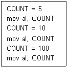
- 5
- 10
- 100
- 115
(정답률: 68%)
16. 자바(Java)에서 자료형 중 기본형(Primitive type)이 아닌 것은?
- byte
- long
- boolean
- string
(정답률: 44%)
17. C언어에서 “printf”에 사용되는 파라미터(parameter) 중 변환 문자열에 대한 의미로 틀린 것은?
- %o : 2진수로 출력한다.
- %c : 문자로 출력한다.
- %f : 부동 소수점 수로 출력한다.
- %d : 10진수로 출력한다.
(정답률: 77%)
18. 객체지향 개념 중 하나 이상의 유사한 객체들을 묶어 공통된 특성을 표현한 데이터 추상화를 의미하는 것은?
- 메소드
- 상속성
- 추상화
- 클래스
(정답률: 71%)
19. 객체지향프로그래밍의 개념과 관계가 없는 것은?
- 클래스
- 메시지
- 메소드
- 프로시저
(정답률: 78%)
20. C언어에서 공용체 선언 시 관계있는 명령어는?
- struct
- union
- enum
- static
(정답률: 59%)
2과목: 자료구조 및 데이터통신
21. 변조속도가 2400 baud 이고, 16진 QAM을 사용하는 경우 데이터 신호속도(bps)는?
- 4800
- 9600
- 12400
- 19200
(정답률: 68%)
22. OSI 7계층 중 네트워크 계층에 대한 설명으로 맞지 않는 것은?
- 데이터의 암호화 및 압축 기능이 있다.
- 통신망을 통한 목적지까지 패킷 전달을 담당한다.
- 패킷의 경로 선택 및 중계 역할을 한다.
- 과도한 패킷 유입에 대한 폭주 제어 기능을 한다.
(정답률: 62%)
23. 다음 중 다중접속방식에 해당하지 않는 것은?
- TDMA
- CDMA
- FDMA
- XDMA
(정답률: 68%)
24. HDLC 전송 제어 절차의 3가지 동작 모드에 해당하지 않는 것은?
- Synchronous Response Mode
- Normal Response Mode
- Asynchronous Response Mode
- Asynchronous Balanced Mode
(정답률: 51%)
25. 다음 중 자유경쟁으로 채널 사용권을 확보하는 방법으로 노드 간의 충돌을 허용하는 네트워크 접근 방법은?
- Slotted Ring
- Token Passing
- CSMA/CD
- Polling
(정답률: 48%)
26. 신호 대 잡음비가 63인 전송채널이 있다. 이 채널의 대역폭이 8 kHz라 하면 통신용량(bps)은?
- 64420
- 48000
- 25902
- 55270
(정답률: 60%)
27. 다음이 설명하고 있는 다중화 방식은?
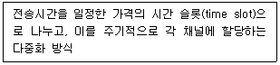
- 주파수 분할 다중화
- 동기식 시분할 다중화
- 코드 분할 다중화
- 파장 분할 다중화
(정답률: 78%)
28. TCP/IP 프로토콜에서 IP(Internet Protocol)에 대한 설명으로 거리가 먼 것은?
- 비연결형 전송 서비스 제공
- 비신뢰성 전송 서비스 제공
- 데이터그램 전송 서비스 제공
- 스트림 전송계층 서비스 제공
(정답률: 39%)
29. 전송제어 절차를 옳게 나타낸 것은?
- 회선 접속 → 데이터 링크 확립 → 회선 절단 → 데이터 링크 해제 → 정보 전송
- 데이터 링크 확립 → 회선 접속 → 정보 전송 → 회선 절단 → 데이터 링크 해제
- 데이터 링크 확립 → 정보 전송 → 회선 접속확립 → 데이터 링크 해제 → 회선 절단
- 회선 접속 → 데이터 링크 확립 → 정보 전송 → 데이터 링크 해제 → 회선 절단
(정답률: 70%)
30. HDLC(High-level Data Link Control)에서 사용되는 프레임의 종류로 옳지 않은 것은?
- Information Frame
- Supervisory Frame
- Control Frame
- Unnumbered Frame
(정답률: 43%)
31. 다음 그림에서 트리의 차수(Degree)는?
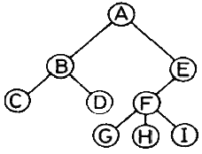
- 1
- 2
- 3
- 4
(정답률: 76%)
32. DBMS의 필수기능이 아닌 것은?
- 편집 기능
- 정의 기능
- 조작 기능
- 제어 기능
(정답률: 77%)
33. 해싱에서 서로 다른 두 개 이상의 레코드가 동일한 주소를 갖는 현상은?
- Relation
- Overflow
- Collision
- Clustering
(정답률: 77%)
34. 다음 트리를 전위 순회한 결과는?
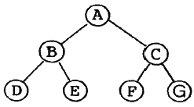
- A B D E C F G
- B D E A C F G
- D E B A F G C
- D E B F G C A
(정답률: 73%)
35. 다음 자료에 대하여 버블 정렬을 이용하여 오름차순으로 정렬할 경우 1회전 후의 결과는?
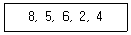
- 8, 5, 2, 4, 6
- 2, 4, 5, 6, 8
- 5, 6, 2, 4, 8
- 8, 5, 6, 2, 4
(정답률: 79%)
36. 선형구조에 해당하지 않는 것은?
- 배열
- 스택
- 큐
- 그래프
(정답률: 75%)
37. 관계대수의 순수 관계 연산자가 아닌 것은?
- Project
- Select
- Join
- Union
(정답률: 48%)
38. 힙 정렬(heap sort)에서 힙의 구성을 위해 사용되는 트리는?
- 스레드이진트리
- 완전이진트리
- 단방향트리
- 이진탐색트리
(정답률: 39%)
39. 데이터베이스의 3계층 스키마에 해당하지 않는 것은?
- 내부 스키마
- 레지스터 스키마
- 외부 스키마
- 개념 스키마
(정답률: 81%)
40. 큐(Queue)에 대한 설명으로 틀린 것은?
- 자료의 삽입과 삭제가 Top에서 이루어진다.
- FIFO 방식으로 처리한다.
- Front와 Rear의 포인터 2개를 갖고 있다.
- 운영체제의 작업 스케줄링에 사용된다.
(정답률: 69%)
3과목: 전자계산기구조
41. 산술 시프트(Arithmetic Shift)에 관한 설명으로 틀린 것은?
- 레지스터의 값을 우측으로 시프트할 때 새로운 입력 비트는 1의 보수, 2의 보수 모두 0이 입력된다.
- 레지스터의 값을 좌측으로 시프트할 때 새로운 입력 비트는 1의 보수인 경우 부호 비트가 입력되고, 2의 보수인 경우 무조건 0이 입력된다.
- 레지스터의 값을 n비트 우측으로 시프트하면 2n으로 나누는 효과를 갖는다.
- 1의 보수 표현방식으로 레지스터에 저장된 값이 최상위 비트인 부호 비트와 최하위 비트인 LSB가 서로 다를 때 우측 시프트를 수행하면 잘림 에러(Truncation Error)가 발생한다.
(정답률: 37%)
42. 다음 (A), (B)에 해당하는 장치의 명칭으로 옳은 것은?
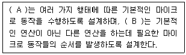
- A : 제어장치, B : 연산장치
- A : 연산장치, B : 제어장치
- A : 입력장치, B : 연산장치
- A : 제어장치, B : 레지스터
(정답률: 51%)
43. 파이프라인 프로세서(Pipeline processor)에 대한 설명으로 가장 옳은 것은?
- 2개 이상의 명령어를 동시에 수행할 수 있는 프로세서
- Micro program에 의한 프로세서
- Bubble memory로 구성된 프로세서
- Control memory로 분리된 프로세서
(정답률: 65%)
44. 상대 주소 지정방식(Relative Addressing Mode)을 사용하는 컴퓨터에서 PC(Program Counter)의 값이 (2FA50)16이고 변위(Displacement)값이 (0B)16 이라면 실제 데이터가 들어 있는 메모리의 주소는 얼마인가?
- (2FA500B)16
- (2FA45)16
- (0B2FA50)16
- (2FA5B)16
(정답률: 53%)
45. 복수 모듈 기억장치의 특징으로 틀린 것은?
- 주기억장치와 CPU의 속도차의 문제점을 개선한다.
- 기억장치의 버스를 시분할하여 사용한다.
- 병렬 판독 논리회로를 가지고 있기 때문에 하드웨어 비용이 증가한다.
- 기억장소의 접근을 보다 빠르게 한다.
(정답률: 37%)
46. 음수 표현을 위해 2의 보수를 사용하는 컴퓨터 시스템에서 십진수 –8에서 +7까지 범위의 수를 표현, 저장하고자 할 경우에 레지스터의 최소 길이는?
- 3비트
- 4비트
- 5비트
- 6비트
(정답률: 63%)
47. 10진수 –456을 PACK 형식으로 표현한 것은?
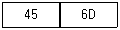
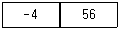
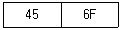
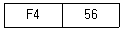
(정답률: 50%)
48. 중앙처리장치와 기억장치 사이에 실질적인 대역폭(Bandwidth)을 늘리기 위한 방법으로 가장 옳은 것은?
- 메모리 인터리빙
- 자기테이프 기억장치
- 가상 기억장치
- 폴링(Polling) 방법
(정답률: 56%)
49. 메모리에 기억된 내용에 의해 접근하는 기억장치는?
- associative memory
- bubble memory
- virtual memory
- DMA
(정답률: 58%)
50. 데이터 단위가 8비트인 메모리에서 용량이 64kB 인 경우의 어드레스 핀의 개수는? (단, KB = kilo byte 이다.)
- 12개
- 14개
- 16개
- 18개
(정답률: 59%)
51. 특정 비트를 반전시킬 때 사용하는 연산은?
- AND
- OR
- EX-OR
- MOVE
(정답률: 71%)
52. 다음은 팩(pack) 형식의 10진수를 16진수로 나타낸 것이다. A와 B의 덧셈 연산의 결과는?
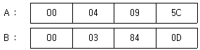
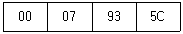
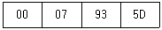
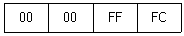
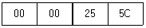
(정답률: 31%)
53. 인터럽트(interrupt)가 발생할 경우 인터럽트 처리를 하기 전에 스택에 저장하는 정보가 아닌 것은?
- PC의 내용
- 인터럽트 벡터
- 상태 레지스터
- CPU 레지스터의 내용
(정답률: 42%)
54. A = 1, B = 1, C = 0, D = 1일 때 논리연산 ((AB⊕C)+C′D)′+(A⊕CD)′의 결과 값과 (AB′C+BC′)⊕(A′+C′)(B′+AD′)의 결과 값을 순서대로 나열한 것은?
- 0, 0
- 0, 1
- 1, 0
- 1, 1
(정답률: 40%)
55. 순서논리회로가 아닌 것은?
- 플립플롭 회로
- 레지스터 회로
- 카운터 회로
- 가산기 회로
(정답률: 45%)
56. 레지스터에 기억된 자료에서 특정한 위치의 비트 내용을 검색 또는 위치를 교환하는 방법은?
- rotate
- overlap
- decoder
- encoder
(정답률: 70%)
57. 캐시와 주기억장치로 구성된 컴퓨터에서 주기억장치의 접근 시간이 200 ns, 캐시 적중률이 0.9, 평균 접근 시간이 30 ns 일 때 캐시 메모리의 접근 시간은?
- 9 ns
- 10 ns
- 11 ns
- 12 ns
(정답률: 41%)
58. 프로세스가 수행될 때 나타나는 지역성을 응용해서 접근 속도를 빠르게 하는 캐시 메모리에서 변화된 캐시의 내용을 주기억장치에 기록하는 방법이 아닌 것은?
- write-through
- write-back
- write-once
- write-all
(정답률: 40%)
59. 연산 결과를 항상 누산기(Accmulator)에 저장하는 명령어 형식은?
- 0-주소 명령어
- 1-주소 명령어
- 2-주소 명령어
- 3-주소 명령어
(정답률: 66%)
60. 상대 주소모드를 사용하는 컴퓨터에서 분기 명렁어가 저장되어 있는 기억장치 위치의 주소가 256AH이고, 명령어에 지정된 변위값이 –75H인 경우 분기되는 주소의 위치는? (단, 분기명령어의 길이는 3바이트이다.)
- 24F2H 번지
- 24F5H 번지
- 24F8H 번지
- 256DH 번지
(정답률: 35%)
4과목: 운영체제
61. CPU 스케줄링에 있어서 선점(Preemption) 알고리즘에 해당하는 것은?
- SRT(Shortest Remaining Time)
- 우선순위 알고리즘
- HRN(Highest Response-ratio Next)
- FCFS(First Come First Served)
(정답률: 52%)
62. 프로세스 상태의 종류로 틀린 것은?
- Request
- Ready
- Running
- Blcok
(정답률: 47%)
63. 분산 운영체제 구조 중 다음의 특징을 갖는 것은?
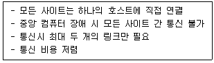
- Ring Connection
- Multi Access Bus
- Hierarchy
- STAR
(정답률: 71%)
64. UNIX시스템에서 사용되는 쉘의 종류로 틀린 것은?
- Alpha Shell
- C Shell
- Bourne Shell
- Korn Shell
(정답률: 47%)
65. 운영체제에 속하지 않는 것은?
- Windows 10
- Linux
- OS/2
- RADEON 7
(정답률: 73%)
66. 어셈블리 언어에 대한 설명으로 틀린 것은?
- 어셈블러에 의하여 기계어로 번역되어야 한다.
- 어셈블리 언어는 기종에 관계없이 동일한 명령어로 구성되는 장점이 있다.
- 기로호 표기되어 프로그램을 작성하기가 기계어보다 편리하다.
- 어셈블리어에서 사용되는 명령은 의사 명령과 실행 명령으로 구분할 수 있다.
(정답률: 61%)
67. 분산 처리 시스템의 계층 구조 그림에서 (ㄱ)에 해당하는 계층은?
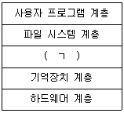
- 프로세스 계층
- 보안 계층
- 입출력 계층
- 네트워크 계층
(정답률: 45%)
68. 세마포어(semaphore)에 관한 설명 중 틀린 것은?
- 다익스트라(Dijkstra)가 제안한 방법이다.
- 세마포어는 여러 가지 동기 문제를 해결하는 데 사용된다.
- 프로세스 하나가 세마포어 값을 수정할 때 다른 프로세스가 같은 세마포어 값을 동시에 수정할 수 있다.
- 세마포어는 음이 아닌 정수값을 갖는 플래그 변수이다.
(정답률: 61%)
69. 공개키 암호화 기법에 대한 설명으로 옳지 않은 것은?
- 공개키 암호화 알고리즘으로 SEED, 3DES, AES 등이 있다.
- 공개키 암호화 시스템에서는 안전한 키 분배(Key Distribution)가 필요하다.
- 공개키 암호화 시스템은 긴 평문을 암호화하는 경우에는 적합하지 않다.
- 평문을 암호화하는 공개키와 복호화에 이용되는 비밀키를 달리하는 비대칭키 암호화 기법이다.
(정답률: 39%)
70. 임계구역(critical section) 문제를 해결하기 위해 충족해야 할 요건이 아닌 것은?
- 상호 배제(mutual exclusion)
- 교착상태(deadlock)
- 한계 대기(bounded waiting)
- 진행(progress)
(정답률: 32%)
71. 사용자 수준에서 지원되는 스레드(thread)가 커널에서 지원되는 스레드에 비해 가지는 장점은?
- 스레드 간의 전이 시에 커널이 개입하지 않으므로 수행이 빠르다.
- 한 프로세스가 운영체제를 호출할 때 전체 프로세스가 대기할 필요가 없으므로 수행이 빠르다.
- 스레드의 개수가 많은 경우에는 프로세스 단위로 스케줄링이 되기 때문에 처리 시간을 많이 배정받을 수 있다.
- 스레드의 개수가 많은 경우에는 각 스레드의 독립적인 스케줄링으로 인하여 처리 시간을 많이 배정받을 수 있다.
(정답률: 36%)
72. 주기억장치 배치 전략 기법으로 최초 적합(First Fit) 방법을 사용한다고 할 때, 다음과 같은 기억장소 리스트에서 10K 크기의 작업은 어느 기억공간에 할당되는가? (단, 탐색은 위에서 아래로 한다.)
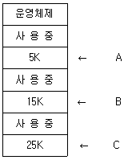
- A
- B
- C
- 할당할 수 없다.
(정답률: 74%)
73. 한 프로세스에서 사용되는 각 페이지마다 시간 테이블을 두어 현 시점에서 가장 오랫동안 사용되지 않은 페이지를 교체하는 알고리즘은?
- C-SCAN
- FIFO
- LRU
- SJF
(정답률: 75%)
74. 운영체제의 성능평가 기준에서 일정 시간 내에 시스템이 처리하는 일의 양을 나타낸 것은?
- Turn Around Time
- Availability
- Throughput
- Reliability
(정답률: 51%)
75. 프로세스(Process)의 정의로 틀린 것은?
- PCB를 가진 프로그램
- 동기적 행위를 일으키는 주체
- 프로세서가 할당되는 실체
- 활동 중인 프로시저(Procedure)
(정답률: 58%)
76. 파일 디스크립터(file descriptor)에 대한 설명으로 틀린 것은?
- 파일 제어 블록(File control Block)이라고도 한다.
- 파일 관리를 위해 시스템이 필요로 하는 정보를 가지고 있다.
- 사용자가 파일 디스크립터를 직접 참조할 수 있다.
- 보조기억장치에 저장되어 있다가 파일이 개방(open)되면 주기억장치로 이동된다.
(정답률: 67%)
77. 프로세스 스케줄링 기법 중 Round-Robin 기법에 대한 설명으로 틀린 것은?
- 비 선점형 기법이다.
- 시간할당량이 너무 커지면, FCFS와 비슷하게 된다.
- 시간 할당량이 너무 작아지면, 오버헤드가 커지게 된다.
- interactive 시스템에 많이 사용된다.
(정답률: 52%)
78. 현재 헤드의 위치가 50에 있고, 요청 대기열의 순서가 다음과 같을 경우, C-SCAN 스케줄링 알고리즘에 의한 헤드의 총 이동거리는 얼마인가? (단, 현재 헤더의 이동 방향은 안쪽이며, 안쪽의 위치는 0으로 가정한다.)
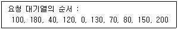
- 790
- 380
- 370
- 250
(정답률: 39%)
79. 컴퓨터 사용자와 컴퓨터 하드웨어 사이에서 사용자가 보다 편리하게 컴퓨터를 이용할 수 있도록 하는 프로그램은?
- 크로스 컴파일러(Cross Compiler)
- 프리 프로세서(Preprocessor)
- 운영체제(Operating System)
- 매크로(Macro)
(정답률: 72%)
80. 주기억장치의 크기가 8MB일 때 페이지의 크기가 1KB이면 이 주기억장치에 놓여질 수 있는 페이지의 수는? (단, MB = mega byte, KB = kilo byte 이다.)
- 400개
- 800개
- 4000개
- 8000개
(정답률: 65%)
5과목: 마이크로 전자계산기
81. 주소지정 방식 중 레지스터의 초기화와 상수를 지정하는데 많이 사용하는 방식은?
- 직접 주소 방식
- 간접 주소 방식
- 즉시 주소 방식
- 인덱스 주소 방식
(정답률: 39%)
82. DRAM이 SRAM보다 우수한 점은?(오류 신고가 접수된 문제입니다. 반드시 정답과 해설을 확인하시기 바랍니다.)
- 전력소모가 적다.
- 타이밍이 간단하다.
- 비트당 단가가 싸다.
- 리프레시용 주변회로가 필요하다.
(정답률: 55%)
83. DMA 제어기의 구성에 포함되지 않는 것은?
- 워드 카운터 레지스터
- 자료 버퍼 레지스터
- 데이지체인
- 주소 레지스터
(정답률: 60%)
84. I/O 버스를 통하여 접수된 command 에 대한 해석이 이루어지는 곳은?
- 커맨드 디코더
- 상태 레지스터
- 버퍼 레지스터
- 인스트럭션 레지스터
(정답률: 47%)
85. I/O 장치 자체를 기억장치의 일부로 취급하는 것은?
- isolated I/O
- user-initiated I/O
- memory-mapped I/O
- direct memory access
(정답률: 58%)
86. 마이크로컴퓨터의 특징으로 틀린 것은?
- 소비전력이 적다.
- 제품 자체를 소형화할 수 있다.
- 기능 변경은 어렵지만, 확장은 가능하다.
- 신제품 개발비와 유지비가 적어 경제성이 있다.
(정답률: 58%)
87. 256×2램(RAM)으로 주소 (1000)16~(17FF)16 사이에 기억장치를 구성하려면, 필요한 램의 개수는? (단, 기억장치 한 번지는 8비트로 되어 있다.)
- 8
- 16
- 32
- 64
(정답률: 27%)
88. Solid State Drive 에 대한 설명으로 틀린 것은?
- NAND 플래시 또는 NOR 플래시로 구성되어 있다.
- 소비전력이 기존 하드 디스크 저장장치보다 적다.
- 플로팅 게이트(FG)에 전자를 채우고 비우는 방식으로 데이터를 기록, 삭제한다.
- 1개의 셀 당 1비트의 데이터를 저장하면 SLC, 2비트를 저장하면 TLC, 4비트를 저장하면 QLC라 한다.
(정답률: 40%)
89. 주소지정 방식 중 다음에 수행 할 명령의 주소를 일시 기억하는 프로그램 카운터(PC)와 오퍼랜드에 기록된 변위 값이 더해져 자료의 위치를 찾아내는 주소 지정 방식은?
- Immediate Addressing Mode
- Indirect Addressing Mode
- Relative Addressing Mode
- Implied Addressing Mode
(정답률: 39%)
90. 마이크로프로세서 명령어 중 기능상 성격이 다른 것은?
- ADD
- SUB
- MOV
- INC
(정답률: 34%)
91. 기억 장치에 데이터를 저장하기 위하여 데이터의 저장 명령으로부터 기억 장치에 데이터가 전송될 때까지의 시간을 의미하는 것은?
- seek time
- access time
- latency time
- data transmission time
(정답률: 39%)
92. 주 메모리의 성능을 평가하는 중요한 요소가 아닌 것은?
- 대역폭
- 기억소자
- 기억용량
- 사이클 시간
(정답률: 51%)
93. ATMega128 MCU의 특징 중 틀린 것은?
- RISC 구조를 바탕으로 제작되었다.
- 폰노이만 구조로 설계되었다.
- 8비트의 마이크로컨트롤러이다.
- JTAG 인터페이스 기능을 가진다.
(정답률: 46%)
94. 스택 포인터를 1 증가시키고, 스택 포인터가 가리키는 곳에 50H 번지의 내용을 저장하는 명령어는?
- POP 50H
- PUSH 50H
- READ 50H
- MOVE 50H
(정답률: 68%)
95. BASIC과 같이 고급 언어로 작성된 소스프로그램을 한 단계씩 기계어로 해석하여 실행하는 언어처리 프로그램은?
- 로더(Loader)
- 어셈블러(Assembler)
- 인터프리터(Interpreter)
- 기계어(Machine Language)
(정답률: 65%)
96. 인터럽트 발생 시 각 장치 내에 있는 상태 레지스터의 인터럽트 비트를 우선순위에 따라 차례로 조사하여 어떤 인터럽트가 발생되었는지를 알아내는 방법은?
- Polling 방식
- Strobe Control
- 인터럽트 마스크
- 벡터 인터럽트 방식
(정답률: 45%)
97. 다음 용어 중 데어터가 전송되는 속도를 나타내는 것은?
- 보 레이트(baud rate)
- 듀티 팩터(duty factor)
- 클록 레이트(clock rate)
- 스케일 팩터(scale tactor)
(정답률: 65%)
98. 언어처리 소프트웨어 중 프로그램 실행(execution) 기능을 갖고 있는 것은?
- compiler
- assembler
- interpreter
- cross assembler
(정답률: 38%)
99. 명령어 중 단일 오퍼랜드 명령어는?
- ADD
- AND
- COMPARE
- COMPLEMENT
(정답률: 64%)
100. 주소 선(address line)을 A0~A13까지 총 14개를 사용하여 저장할 수 있는 메모리의 주소 공간의 범위는?
- 0000H ~ 10FFH
- 0000H ~ 2FFFH
- 0000H ~ 3FFFH
- 0000H ~ FFFFH
(정답률: 38%)
이유는 다음과 같습니다.
1. "int a [ ] = {4, 5, 6, -9};" 는 배열 a를 선언하고, 초기값으로 4, 5, 6, -9를 할당합니다.
2. 배열 a는 정적 배열이므로, 컴파일 시점에 크기가 결정됩니다.
3. 따라서, 배열 a의 크기는 초기값의 개수와 동일하게 4가 됩니다.
4. 따라서, "int a [4] = {4, 5, 6, -9};" 는 배열 a를 크기가 4인 정적 배열로 선언하고, 초기값으로 4, 5, 6, -9를 할당하는 것과 동일합니다.
다른 보기들은 모두 문법적으로 잘못된 표현입니다.